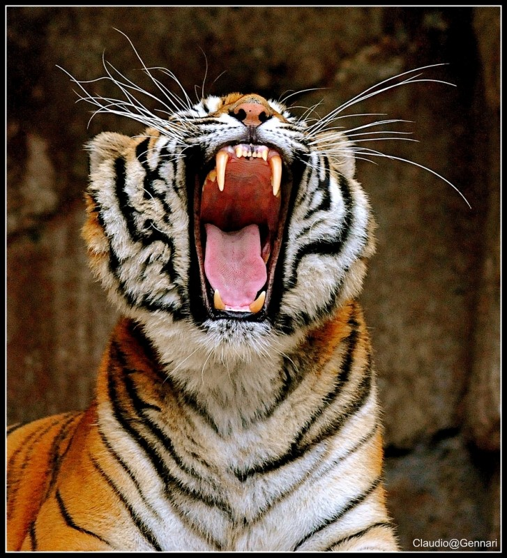

Stereotype Threat
July 26th 2015
Stereotype threat is when a person feels he is confirming negative stereotypes about his social group. This person can become anxious about a certain stereotype and actually underperform because of this social pressure.
I've personally experienced this. As an asian male, there is the stereotype that asians are very book smart but when it comes to street smarts, they struggle. This may involve public speaking or socializing. I'm not the most extroverted person out there, but I enjoy chatting with people because I'm curious about others.
In college, I've been at gatherings where I notice I'm the only asian there and start becoming anxious about how others see me. I start to clam up and blank when talking. This was weird because I was there to talk with people, not be self-concious about how others view me.
Though it's been years since I've thought about situations like these, I still see it as a good reminder to just relax and not worry about how others see me. It's easier to just be myself, which helps avoid stereotype threat.